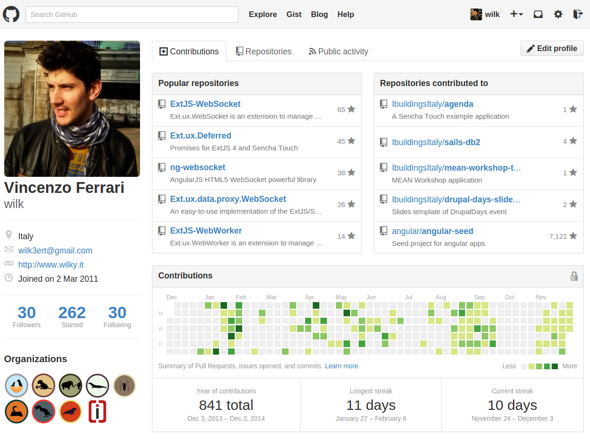
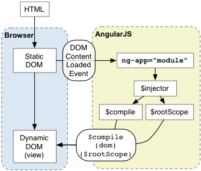

AngularJS

Thanks!

$ whoami
Vincenzo Ferrari >> Wilk
- Fullstack Web Developer
- Software Engineer at Ibuildings Italia
- Open Source Supporter
Github
Contacts
- Google+: +VincenzoFerrari
- Twitter: @__wilky__
- LinkedIn: Vincenzo Ferrari
- Stackoverflow: wilk
- Coderwall: wilk

Motivation
- Vast community
- bower.io/search/?q=angular : 3,050 matched results
- ngmodules.org/ : 1,051 registered modules
- stackoverflow.com/questions/tagged/angularjs : 65,872 questions tagged
- google.com/#q=angularjs : 16,700,000 results
Index
- Template Engine
- Dependency Injection
- Directives
- Filters
- Services
- Modularity
- Routing
- Testing
- Useful Modules
- Libraries
- Frameworks
Angular Overview

How does it work?

Bootstrapping
One to Two-Way Data-Binding
Static DOM

Dynamic DOM

Template Engine

Why does Angular have a template engine?
RESTful single page web applications need to compile and render their markup. This means that only raw data is sent/received to/from the network.
How does it work?
The template engine works in two phases:
- Compile phase
- Link phase
Compile Phase
The compiler ($compile) traverses the DOM and collects all of the directives. The result is a linking function
Link Phase
It combines the directives with a scope and produces a live view.
Code sample
// index.html
<html ng-app="MyModule">
<body ng-controller="MyCtrl">
<input ng-model="text" type="text" />
<label>{{text}}</label>
<button ng-click="templateSubmit()">{{btnText}}</button>
</body>
</html>
// app.js
angular.module('MyModule', [])
.controller('MyCtrl', ['$scope', function ($scope) {
$scope.text = '';
$scope.btnText = 'Submit';
$scope.templateSubmit = function () {
alert("text value is: " + $scope.text);
};
}]);
[[text]]
Dependency Injection

What's DI?
Dependency Injection (DI) is a software design pattern that deals with how components get hold of their dependencies. The Angular injector subsystem is in charge of creating components, resolving their dependencies, and providing them to other components as requested.
Dependencies
AngularJS lets you to inject various types of dependencies:
- Angular built-in dependencies
- Vendor dependencies
- Personal dependencies
Code sample
angular.controller('MyCtrl', ['$scope', '$location', function ($scope, $location) {
// do something with $scope and $location services
}]);
var MyCtrl = function ($scope, $location) {
// do something with $scope and $location services
};
MyCtrl.$inject = ['$scope', '$location'];
angular.controller('MyCtrl', MyCtrl);
angular.controller('MyCtrl', function ($scope, $location) {
// do something with $scope and $location services
});
Directives

What is a directive?
Directives are markers on a DOM element that tell AngularJS's HTML compiler to attach a specified behavior to that DOM element or even transform the DOM element and its children.
Built-in directives
Angular comes with several useful built-in directives, such as:
- ngApp
- ngController
- ngModel
- ngRepeat
- ngClick
- ngView
https://docs.angularjs.org/api/ng/directive
Built-in directives are identified by the ng namespace.
Built-in directives in detail - 1
ngClick | ngDblclick | ngInit
ngClick and ngDblclick attach a listener on click and dblclick event of the element, while ngInit is used to initialize a variable in the current scope.
<button ng-click="aCount = aCount + 1" ng-init="aCount = 10">Click me<button>
<button ng-dblclick="count = count + 1" ng-init="count = 0">Double click me<button>
Built-in directives in detail - 2
ngIf | ngSwitch
Some directives change the DOM structure based on a scope expression. ngIf removes or recreates a part of the DOM depending on the evaluation of the expression, while the ngSwitch conditionally swap the DOM structure.
<input type="number" ng-model="value"/>
<small ng-if="value >= 0">Positive</small>
<div ng-switch="selection">
<div ng-switch-when="Go Lang">Go Lang</div>
<div ng-switch-when="Dart">Dart</div>
<div ng-switch-default>AngularJS</div>
</div>
Build your custom directives
https://docs.angularjs.org/guide/directive
One of the most powerful feature in AngularJS is the possibility to make custom directives. Like other Angular components, a custom directive is just a module.
Code sample
angular.directive lets you to define a new custom filter:
angular.directive('myClock', ['$interval', 'dateFilter', function ($interval, dateFilter) {
return {
restrict: 'E',
link: function (scope, element, attrs) {
$interval(function () {
element.text(dateFilter(new Date(), 'H:mm:ss'));
}, 1000);
}
};
}]);
<my-clock></my-clock>
Filters

What is a filter?
A filter formats the value of an expression for display to the user. They can be used in view templates, controllers or services and it is easy to define your own filter.
Built-in filters
AngularJS has several built-in filters:
- currency
- date
- json
- lowercase
- uppercase
- orderBy
Filters within templates
Filters can be applied to expressions in view templates using the following syntax:
{{ expression | filter }}
Filters may have arguments:
{{ expression | filter:argument1:argument2:... }}
It's possible to chain more filters:
{{ expression | filter1 | filter2 | ... }}
Filters within the application
Inject a dependency with the name <filterName>Filter to your controller/service/directive:
angular.controller('MyCtrl', ['dateFilter', function(dateFilter) {
var date = dateFilter(new Date(), 'Ymd');
}]);
Built-in filters in detail - 1
Currency
Formats a number as a currency.
{{amount | currency:'€':2}} or currencyFilter(amount, '€', 2);
{{amount | currency:'$':2}} or currencyFilter(amount, '$', 2);
{{amount | currency:'£':2}} or currencyFilter(amount, '£', 2);
Date
Formats date to a string based on the requested format.
{{today | date:'M/d/yyyy'}} or dateFilter(today, 'M/d/yyyy');
Built-in filters in detail - 2
JSON
Converts a Javascript Object into JSON string.
{{objectToDebug | json}} or jsonFilter(objectToDebug);
orderBy
Orders a specified array by the expression predicate. It is ordered alphabetically for strings and numerically for numbers.
{{list | orderBy:predicate:reverse}} or orderByFilter(list, predicate, reverse);
- [[user.name]] - [[user.telephone]] - [[user.age]]
Define your custom filters
https://docs.angularjs.org/guide/filter
Writing your own filter is very easy: just register a new filter factory function with your module. This factory function should return a new filter function which takes the input value as the first argument. Any filter arguments are passed in as additional arguments to the filter function.
Code sample
angular.filter lets you to define a new custom filter:
angular.filter('star', ['uppercaseFilter', function (uppercaseFilter) {
return function (value, starNumber) {
value = String(value);
starNumber = starNumber || 0;
var stars = '',
result = [];
for (var i = 0; i < starNumber; i++) stars += '*';
result.push(stars);
result.push(uppercaseFilter(value));
result.push(stars);
if (value && value.length > 0) return result.join(' ');
else return '';
};
}]);
<p>{{name | star:starNumber}}</p>
Services
What's a service?
Angular services are substitutable objects that are wired together using dependency injection (DI). You can use services to organize and share code across your app.
Using a service
Angular has several built-in services and it's possible to use them with the Dependency Injection, like so:
angular.controller('MyCtrl', ['$http', function ($http) {
$http.get('/user')
.success(function (user) {
// Use the user data
})
.error(function (err) {
// Notify the error
});
}]);
A service can be used where it's possible to use the DI: in other services, directives, controllers and filters.
Built-in services
AngularJS has several built-in services:
- $http
- $q
- $location
- $compile
- $filter
Built-in services in detail - 1
$http
The $http service is a core Angular service that facilitates communication with the remote HTTP servers via the browser's XMLHttpRequest object or via JSONP.
angular.controller('MyCtrl', ['$http', '$scope', function ($http, $scope) {
$scope.getUser = function () {
$http.get('/Users.json')
.success(function (users) {
$scope.users = users;
});
};
}]);
| Name | Telephone | Age |
|---|---|---|
| [[user.name]] | [[user.telephone]] | [[user.age]] |
Built-in services in detail - 2
$location
The $location service parses the URL in the browser address bar (based on the window.location) and makes the URL available to your application. Changes to the URL in the address bar are reflected into $location service and changes to $location are reflected into the browser address bar.
angular.controller('MyCtrl', ['$scope', '$location', function ($scope, $location) {
$scope.url = {};
$scope.getUrl = function () {
$scope.url.absUrl = $location.absUrl();
$scope.url.url = $location.url();
$scope.url.protocol = $location.protocol();
$scope.url.host = $location.host();
$scope.url.path = $location.path();
$scope.url.port = $location.port();
};
}]);
[[url | json]]
Creating a custom service
angular.service allows to define a new service:
angular.service('Mario', ['$http', '$log', function ($http, $log) {
this.salutation = function () {
alert('Hi, I\'m Mario!');
};
this.findLuigi = function () {
$http.get('/luigi')
.success(function (luigi) {
alert('I found you, Luigi!');
$log.debug(luigi);
});
};
}])
.controller('MarioCtrl', ['Mario', function (Mario) {
Mario.salutation();
Mario.findLuigi();
}]);
Modularity
How to build a module
Angular provides the angular.module function to register a new module.
angular.module('MyModule', []);
The empty array stands for the dependencies list.
Custom modules aka Dependencies
In Angular every module is a dependency that can be re-used in the application.
angular.module('MyModule.values', [])
.value('MyValue', 'a value');
angular.module('MyApp', ['MyModule.values'])
.controller('MyCtrl', ['MyValue', function (MyValue) {
expect(MyValue).toBe('a value');
}]);
Testing
Types of testing
First of all, Javascript is a dynamically typed language that comes with no help from the compiler and Angular is written with testability in mind. There are two types of testing in AngularJS:
- End to End Testing
- Unit Testing
Jasmine (Unit Test)
Jasmine is a testing framework and has several powerful constructors that allow to make assertions and expections on different expression.
var Mario;
describe('Testing Mario service', function () {
beforeEach(module('MyModule'));
beforeEach(inject(function (_Mario_) {
Mario = _Mario_;
}));
describe('Testing getCoins method', function () {
it('should return an empty array of coins', function () {
var coins = Mario.getCoins();
expect(coins).toBeDefined();
expect(coins.length).toBeDefined();
expect(coins.length).toEqual(0);
});
});
});
Protractor (E2E Test)
https://github.com/angular/protractor
Protractor is an end to end test runner which simulates user interactions that will help you verify the health of your Angular application.
describe('Users Table', function () {
it('should filter the users by name', function () {
// Load users
element(by.css(':button')).click();
expect(element.all(by.repeater('user in users')).count()).toEqual(3);
// Filter by name (Mario)
element(by.model('name')).sendKeys('Mario');
expect(element.all(by.repeater('user in users')).count()).toEqual(1);
});
});
Useful Modules

ngResource
What is it?
The ngResource module provides interaction support with RESTful services via the $resource service and $resourceProvider.
Code sample
angular.module('MyModule', ['ngResource'])
.service('Mario', ['$resource', function ($resource) {
return $resource('/Mario/:id', {id: '@id'}, {
getStars: {
method: 'GET',
url: '/Mario/stars',
isArray: true
}
});
}])
.controller('MyCtrl', ['$scope', 'Mario', function ($scope, Mario) {
// -> GET /Mario/
// <- {id: 10, starCounter: 9}
$scope.mario = Mario.get(function () {
$scope.mario.starCounter = 10;
$scope.mario.$save(); // POST /Mario/10 {id: 10, starCounter: 10}
});
// GET /Mario/stars
$scope.stars = Mario.getStars(function () {
expect($scope.stars.length).not.toEqual(0);
});
}]);
ngRoute
Client-side routing
Single page web applications need client-side routing because they communicate with the server with AJAX/WebSocket protocols instead of refreshing the entire page.
Angular provides a set of spectacular features.
What is it?
ngRoute is an Angular module providing features to handle client-side routing with ease. It's mainly composed of:
- ngView: directive
- $routeProvider: provider
- $route: service
- $routeParams: service
The idea is to use the $routeProvider initially, combined with the ngView directive to load the route template associated and then to use the $route/$routeParams service to get params.
Code sample
angular.module('MyModule', ['ngRoute'])
.config(['$routeProvider', function ($routeProvider) {
$routeProvider.when('/:username/:reponame/', {
templateUrl: 'views/repo.html',
controller: 'RepoCtrl'
});
}])
.controller('RepoCtrl', ['$scope', '$routeParams', function ($scope, $routeParams) {
$scope.username = $routeParams.username;
$scope.reponame = $routeParams.reponame;
}]);
// index.html
<div>
<ng-view></ng-view>
</div>
// views/repo.html
<div>
<b>Username</b>: {{username}}
<b>Repo Name</b>: {{reponame}}
</div>
ngCookies
What is it?
The ngCookies module provides a convenient wrapper for reading and writing browser cookies.
It comes with two services:
- $cookieStore
- $cookies
$cookieStore
Provides a key-value (string-object) storage, that is backed by session cookies. Objects put or retrieved from this storage are automatically serialized or deserialized by angular's toJson/fromJson.
angular.module('MyModule', ['ngCookies'])
.controller('MyCtrl', ['$cookieStore', function ($cookieStore) {
$cookieStore.put('Character', 'Mario');
var choosenCharacter = $cookieStore.get('Character'); // Mario
$cookieStore.remove('Character');
}]);
$cookies
Provides read/write access to browser's cookies like $cookieStore. The mainly difference is that only a simple object is exposed and by adding or removing properties to/from this object, new cookies are created/deleted.
angular.module('MyModule', ['ngCookies'])
.controller('MyCtrl', ['$cookies', function ($cookies) {
var Character = $cookies.Character;
$cookies.Character = 'Mario';
}]);
Libraries

Angular-UI
Chemical Composition
Angular-UI is a suite that comes with a set of libraries for Angular:
- UI Utils
- UI Modules
- UI Bootstrap
- NG Grid
- UI Router
UI Utils
http://angular-ui.github.io/ui-utils/
A utility package with no external dependencies: each module is contained in this package but can be included individually.
UI Modules
Standalone AngularUI modules with external dependencies:
- ui-ace: Ace IDE module
- ui-calendar: web calendar view module
- ui-map: Google Maps module
- ui-date: module for a date picker
UI Bootstrap
http://angular-ui.github.io/bootstrap/
Twitter Bootstrap written natively in AngularJS. This repository contains a set of native AngularJS directives based on Bootstrap's markup and CSS. As a result no dependency on jQuery or Bootstrap's JavaScript is required.
ngGrid
http://angular-ui.github.io/ng-grid/
Grid virtualization written natively in AngularJS and JQuery. ngGrid comes as an attribute requiring a configuration object:
// views/grid.js
<div class="gridStyle" ng-grid="gridOptions"></div>
// app.js
angular.module('MyModule', ['ui.grid'])
.controller('MyCtrl', ['$scope', function ($scope) {
$scope.myData = [
{name: "Moroni", age: 50},
{name: "Tiancum", age: 43},
{name: "Jacob", age: 27},
{name: "Nephi", age: 29},
{name: "Enos", age: 34}
];
$scope.gridOptions = {data: 'myData'};
}]);
Restangular
What is it?
Restangular is an AngularJS service that simplifies common GET, POST, DELETE, and UPDATE requests with a minimum of client code. It's a perfect fit for any WebApp that consumes data from a RESTful API.
Code sample
angular.module('MyModule', ['restangular'])
.controller('MyCtrl', ['$scope', 'Restangular', function ($scope, Restangular) {
var mushroomsEntity = Restangular.all('mushrooms');
// GET /mushrooms
mushroomsEntity.getList().then(function (mushrooms) {
$scope.mushrooms = mushrooms;
});
// or
$scope.mushrooms = mushroomsEntity.getList().$object;
// POST /mushrooms {color: 'brown'}
mushroomsEntity.post({color: 'brown'});
}]);
Frameworks

Ionic Framework
What is it?
Free and open source, Ionic offers a library of mobile-optimized HTML, CSS and JS components, gestures, and tools for building highly interactive apps. Built with Sass and optimized for AngularJS.
What is it composed of?
It's composed of:
- AngularJS: the Javascript part is satisfied by Angular
- CSS/SASS: a set of CSS/SASS classes that can be overridden by new ones
- Ionic Client: a tool built with NodeJS that helps you with your project
Components
http://ionicframework.com/docs/components/
Ionic comes with serveral useful components:
- header and footer bars
- buttons (with icons)
- lists
- cards
- forms
- HTML5 input types
- tab panels
- grids
Features
http://ionicframework.com/docs/api/
CSS components are not the only important thing. Ionic has got lots of Javascript features:
- action sheet
- events
- lists
- gestures
- navigation
- utility
Getting started
Try it out!
$ sudo npm install -g cordova ionic
$ ionic start myAwesomeApp tabs
$ cd myAwesomeApp
$ ionic platform add android
$ ionic build android
$ ionic emulate android
Mobile Angular UI
What is it?
Mobile Angular UI is a mobile UI framework just like Sencha Touch or jQuery Mobile. If you know AngularJS and Twitter Bootstrap you already know it!
What is it composed of?
It's composed of:
- AngularJS
- Twitter Bootstrap
- PhoneGap
Getting started
Try it out!
$ sudo npm install -g bower yo gulp generator-mobileangularui phonegap
$ phonegap create myAwesomeApp
$ cd myAwesomeApp
$ yo mobileangularui
$ gulp build
$ phonegap run ios
Conclusion

Why Angular?
- Open Source
- Highly Modular
- Multi Pattern (MVC, MVVM, MVP: MVW)
- Template Engine (with custom filters)
- Extend the HTML (directives)
- Reuse code (services)
- Built with testability in mind
- Pure Javascript
- Tons of modules and documentations
- Best for single page web application
Thank you!

Questions?